시작하기
QCalc로 할 수 있는 일
QCalc는 식을 종이에 쓰듯 입력하면 바로 결과가 나오는 계산기입니다. 계산은 데스크톱 계산기 Qalculate!의 엔진인 libqalculate가 합니다.
- 사칙연산부터 분수, 제곱근, 단위, 통화, 미분, 적분, 방정식, 행렬까지 한 줄로 계산합니다.
- 가능하면 결과를 정확한 값(√2, π/2, 7/12)으로 보여 주고, 옆에 소수 근삿값도 보여 줍니다.
- 가격, 대출, 날짜, 변환, 통계, 탱크 같은 일상 계산은 「도구」에 있습니다. 숫자를 넣으면 결과가 나옵니다.
- 2D·3D 그래프와 넓이, 길이, 회전체의 부피.
- QCalc는 개인 정보를 모으지 않습니다. 인터넷은 환율을 받을 때만 씁니다.
결과는 참고값입니다. 거래나 증명, 설계와 시공, 세금 신고처럼 틀리면 안 되는 곳에는 쓰지 마세요(주의 사항).
처음 해 보는 세 가지 계산
할 수 있는 것 키로 식을 입력하고 =를 누르면 결과가 기록에 들어갑니다. 입력하는 동안에도 입력란 아래에 결과가 나옵니다.
- 앱을 열고 키로
2 + 3 × 4를 입력합니다. 입력란 아래에 「= 14」가 나옵니다. - =를 누릅니다. 식과 「= 14」가 기록으로 올라가고 입력란이 비워집니다.
- 다음으로
60 mph to km/h를 입력합니다(「to」는 → 키). 「≈ 96.56064 km/h」가 나옵니다. - 세 번째는
sqrt(2)이고, √ 키로도 됩니다. 「= √2 ≈ 1.414213562」로 정확한 값과 근삿값이 나옵니다.
1/3 + 1/4 → = 7/12 ≈ 0.5833333333
기록의 결과를 탭하면 입력란에 넣거나 복사할 수 있습니다.
- 영문자 x는 변수이지 「곱하기」가 아닙니다. 곱셈은 × 키(또는 *)로 하세요.
1.12.0의 새 기능
- 알기 쉽게: 메뉴는 8개 항목이 되었고 도구는 도구에 모였습니다. 각 도구에서 예를 탭하면 채워지고 결과가 바로 나옵니다.
- 일상 도구: 가격: 할인과 세금, 비율, 단가 비교: 어느 쪽이 쌀까, 더치페이, 대출, 적립과 복리, 날짜, 시간, 단위·통화 변환, 통계, 계산 메모.
- 숫자 표기: 1,234.5, 1.234,5, 1 234,5 중에서 고릅니다(숫자 표기).
- 기록: 검색, 별표 고정, 짧은 메모, 고른 줄의 합계, 메모리 키(기록과 메모리).
- 2D에서 3D로: ⟳ 3D 한 번으로 그래프의 영역이 바로 회전체가 되어 3D로 나옵니다(3D: QCalc Pro). 단면이 정해진 입체, 방법을 보여 주는 선, 파푸스의 정리도 있습니다(입체 만들기).
- 빨리 열기: 위젯, 빠른 설정 타일, 아이콘의 바로가기(위젯·타일·바로가기).
- 공유: 그래프 그림과 3D 그래프의 움직이는 GIF(공유).
- QCalc Pro: 표의 CSV, 탱크의 경판과 용량표, 단면 데이터로 만드는 입체, STL 파일, 더 많은 계산 메모 등(QCalc Pro).
- 이 설명서: 앱 안에 있습니다. 도구나 패널 오른쪽 위의 「?」를 누르면 그 절이 열립니다.
앱 안의 예와 팁
할 수 있는 것 메뉴의 예시와 사용법에는 탭하면 입력란에 들어가는 식과 팁이 있습니다. 맨 위의 사용 설명서은 이 설명서를 엽니다.
- 왼쪽 위의 ☰를 누르고 예시와 사용법를 고릅니다.
- 식을 탭합니다. 패널이 닫히고 식이 입력란에 들어갑니다.
- =를 눌러 계산합니다.
이 설명서는 인터넷 없이 읽을 수 있습니다. 사진이 있는 자세한 판(웹)과 PDF는 맨 위의 링크로 엽니다.
화면 보는 법
| 번호 | 이름 | 하는 일 |
|---|---|---|
| 1 | ☰(메뉴) | 도구, 그래프, 목록, 설정 등을 엽니다 |
| 2 | 버튼 | 각도 단위(RAD, DEG), 정확·근사, 10진·16진을 탭 한 번으로 바꿉니다 |
| 3 | 🕘(기록 메뉴) | 기록 검색, 줄 선택, 내보내기, 지우기 |
| 4 | 기록 | 식과 결과. 가장 새것이 아래 |
| 5 | 입력란 | 입력하는 곳. 아래에 입력 중의 결과(미리 보기) |
| 6 | 키 페이지 | 123, 함수, 미적분, 행렬의 네 페이지를 바꿉니다 |
| 7 | 키 | 숫자, 연산자, 함수 |
| 8 | = 키 | 계산하고 식과 결과를 기록에 남깁니다 |
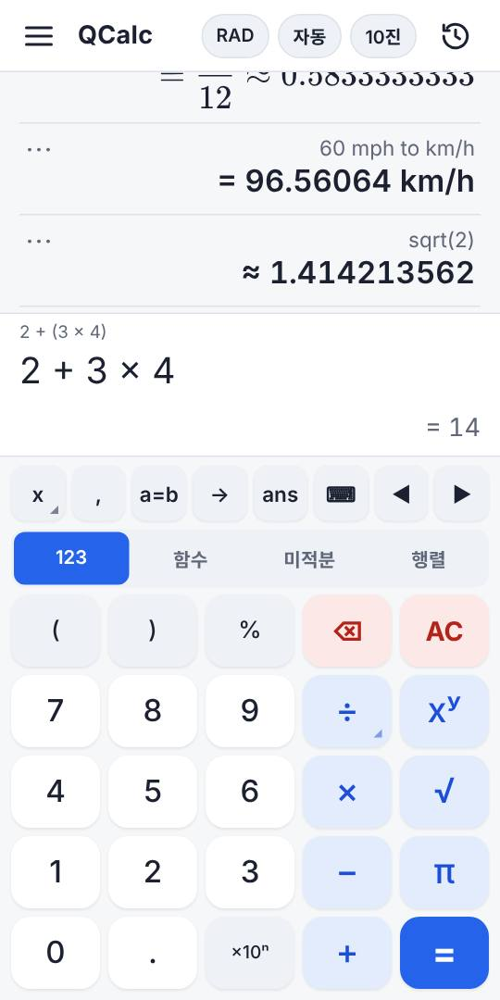
글자가 큰 휴대폰에서는 키의 맨 윗줄(x, ans, 화살표, ⌨)이 숨겨집니다. 탭 끝의 ⌨로 보입니다.
기본 계산
식 입력하기
할 수 있는 것 식을 수학책에 쓰듯 키로 입력합니다. ⌨를 누르면 휴대폰 키보드로도 입력할 수 있습니다.
- 숫자와 연산자 키로 식을 입력합니다. 괄호는 ( ) 키에 있습니다.
- 함수 페이지의 키(sin, log, √ 등)를 누르면 「sin(」 등이 입력됩니다.
- 단위와 통화는 이름으로 씁니다(
5 km,100 USD). 변환은 「to」를 씁니다(5 km to mi). - =를 눌러 계산합니다.
2^10 → = 1024, 5! → = 120, sin(30°) → = 1/2
빈 입력란에서 ÷ × + 등을 누르면 바로 앞의 결과 「ans」에 이어서 계산합니다.
- 괄호의 짝이 맞지 않으면 오류가 납니다. 메시지에 고칠 곳이 나옵니다.
결과 읽기: 정확한 값, 근삿값, 분수
할 수 있는 것 「=」로 시작하는 결과는 정확한 값, 「≈」로 시작하는 결과는 근삿값입니다. 분수나 √가 있는 결과는 소수도 함께 보여 줍니다.
1/3 + 1/4→= 7/12 ≈ 0.5833333333(분수 그대로, 소수와 함께)sqrt(8)→= 2√2 ≈ 2.828427125pi × 2→= 2π ≈ 6.283185307
- 위쪽 버튼으로 정확·근사·자동을 바꿉니다.
- 자릿수는 설정의 정밀도(유효 자릿수)(처음에는 10)입니다.
Pro QCalc Pro 기능입니다. 1000자리까지는 무료입니다. 1000자리를 넘어 200000자리까지는 QCalc Pro의 기능입니다.
아주 긴 결과는 기록에서 옆으로 밀어 모든 자리를 읽을 수 있고, 복사하면 모든 자리가 복사됩니다.
지우기와 되돌리기
할 수 있는 것 ⌫는 한 글자를, AC는 입력란 전체를 지웁니다. 지운 직후에는 입력란 위의 실행 취소로 되돌릴 수 있습니다.
- ⌫는 커서 앞의 한 글자를 지웁니다. 길게 누르면 계속 지웁니다.
- AC로 입력란을 비우면 위에 실행 취소가 나옵니다.
- 실행 취소를 누르면 식이 돌아옵니다.
기록에서 지운 줄도 몇 초 동안 화면 아래의 실행 취소로 되돌릴 수 있습니다.
숫자 표기: 소수점
할 수 있는 것 소수점을 「.」으로 할지 「,」로 할지, 자릿수를 어떻게 묶을지 고릅니다. 처음에는 휴대폰의 지역에 맞춰 표기합니다.
- 설정를 엽니다.
- 숫자 표기에서 자동, 1,234.5, 1.234,5, 1 234,5 중에서 고릅니다.
- 입력과 표시가 고른 표기를 따릅니다.
1.234,5에서는 2.5를 2,5로 씁니다: 2,5 + 3,75 → = 6,25
소수점이 「,」일 때 함수의 인수는 「;」로 나눕니다: max(1,5; 2).
- 소수점이 「,」일 때
1.5라고 쓰면 오류가 납니다. 메시지에 바른 쓰기가 나옵니다.
기록과 메모리
할 수 있는 것 식과 결과는 기록에 최대 300줄 남습니다. 오른쪽 위의 🕘에서 검색, 고른 줄의 합계, 내보내기, 지우기를 합니다.
- 기록의 결과를 탭하면 식을 입력란에 넣기, 결과 복사 등을 고를 수 있습니다.
- 줄 오른쪽의 ⋯에서 ☆ 맨 위에 고정, 짧은 메모 달기를 고를 수 있습니다.
- 🕘에는 기록 검색, 줄 선택: 합계·평균·복사, 기록 내보내기(CSV 파일), 기록 모두 지우기가 있습니다.
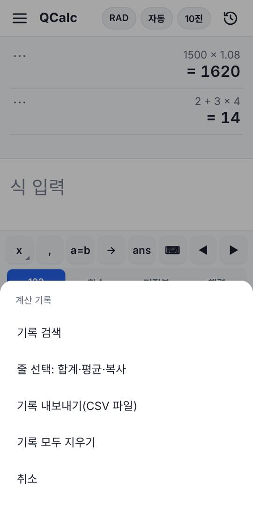
별표로 고정한 줄은 기록이 가득 차도 남습니다.
고정, 메모, 검색
- 줄의 ⋯에서 ☆ 맨 위에 고정를 고르면 다른 고정된 줄과 함께 위로 올라갑니다.
- ⋯에서 짧은 메모 달기를 고르고 짧은 메모를 씁니다. 식 위에 나옵니다.
- 🕘의 기록 검색는 식, 결과, 메모에 입력한 말이 있는 줄만 보여 줍니다.
메모가 「월세」인 줄은 「월세」로 검색하면 나옵니다.
여러 줄 더하기
- 🕘에서 줄 선택: 합계·평균·복사를 고릅니다.
- 더할 줄을 탭합니다.
- 아래에 합계와 평균이 나옵니다. 단위가 맞으면 단위도 붙습니다. 복사로 줄을 복사합니다.
- 단위가 다른 줄(m와 kg)은 더할 수 없습니다. 이유가 나옵니다.
기록 내보내기(CSV)
Pro QCalc Pro 기능입니다.
할 수 있는 것 기록을 스프레드시트에서 열 수 있는 CSV 파일로 저장합니다.
- 🕘에서 기록 내보내기(CSV 파일)를 고릅니다.
- Android의 저장 화면에서 저장할 곳을 고릅니다.
메모리 키(M+ M− MR MC)
할 수 있는 것 전자계산기의 메모리 키입니다. 값은 정확한 값 그대로 저장됩니다.
- 설정의 자세한 설정를 열고 메모리 키(M+ M− MR MC) 표시를 켭니다.
- 결과가 보일 때 M+는 메모리에 더하고, M−는 뺍니다.
- MR은 메모리를 입력란에 넣고, MC는 지웁니다.
키와 입력 도움
네 개의 키 페이지
할 수 있는 것 키는 네 페이지에 나뉘어 있고, 위의 탭으로 바꿉니다.
| 페이지 | 주요 키 |
|---|---|
| 123 | 숫자, + − × ÷, 괄호, %, ^, √ |
| 함수 | sin, cos, tan, log, ln, 절댓값, 계승 등 |
| 미적분 | 미분 d/dx, 적분 ∫, 극한 lim, 합 Σ, 곱 Π, 방정식 |
| 행렬 | 행렬 ▦, 행렬식 det, 전치, 역행렬 |
함수의 이름을 모르면 목록(함수·단위·상수)에서 찾습니다(목록).
빈칸 □(서식)
할 수 있는 것 적분이나 극한 키를 누르면 빈칸 □가 있는 서식이 열립니다. 빈칸을 채우면 식이 완성됩니다.
- 미적분 페이지에서 ∫를 누릅니다.
- 함수, 아래끝, 위끝을 입력합니다. 다음 칸 ▶로 다음 칸으로 갑니다.
- 결과가 아래에 나옵니다. =로 기록에 남깁니다.
서식의 ⋯에 모든 칸 지우기와 이 양식의 사용법 ›가 있습니다.
후보
할 수 있는 것 입력하는 동안 입력란 아래에 후보가 나옵니다. 「to」 뒤에는 바꿀 단위, 키보드 입력에서는 함수와 단위의 이름이 나옵니다.
5 km to까지 입력하면 mi, m, ft 등이 후보로 나옵니다.- 후보를 탭하면 입력됩니다.
함수, 단위, 통화 쓰는 법
할 수 있는 것 식은 Qalculate!와 같은 방법으로 씁니다. 자주 쓰는 형태:
| 이렇게 쓰면 | 뜻 |
|---|---|
sqrt(x), √x | 제곱근 |
x^2 | 거듭제곱 |
5 km to mi | 단위 변환 |
100 USD to EUR | 통화 변환(환율 사용) |
solve(x^2 − 5x + 6 = 0) | 방정식 풀기 |
diff(x^3) | 미분 |
integrate(x^2, 0, 1) | 정적분 |
ans | 바로 앞의 결과 |
일본의 전통 단위 10가지(평, 척, 되, 관 등)도 씁니다: 30 tsubo to m^2.
목록: 함수, 단위, 상수, 내 정의
할 수 있는 것 메뉴의 목록(함수·단위·상수)에는 함수, 단위와 통화, 변수와 상수, 내 정의의 네 탭이 있고, 각각 검색할 수 있습니다.
- ☰에서 목록(함수·단위·상수)를 엽니다.
- 탭을 고르고 위의 칸에 이름의 일부를 입력합니다.
- 항목을 탭하면 설명이 나오고, 식에 넣기로 입력란에 넣습니다.
내 정의 탭에서는 변수(r = 5 cm)와 함수를 저장할 수 있고, 다음에도 남습니다.
통화와 환율
할 수 있는 것 통화는 100 USD to EUR처럼 변환합니다. 환율은 7일마다 저절로 새로 받습니다(인터넷 연결 시).
- 지금 받으려면 설정의 지금 환율 업데이트를 누릅니다.
- 마지막으로 받은 시각은 같은 줄에 나옵니다.
- 인터넷이 없으면 새로 받을 수 없습니다. 마지막으로 받은 환율을 씁니다.
도구
도구 찾기
할 수 있는 것 메뉴의 도구에는 일상 도구와 도형, 부피, 데이터의 도구가 있습니다. 하고 싶은 일로 찾습니다.
- 「?」: 이 설명서의 그 도구 부분을 엽니다. 2 예: 탭하면 채워집니다. 3 칸: 숫자를 넣습니다(회색 숫자는 예). 4 결과: 탭하면 식을 입력란에 넣거나, 결과를 기록에 남기거나, 복사합니다. 5 주의 문구 한 줄(돈이나 안전에 관한 도구). 6 설명 한 줄
- ☰에서 도구를 엽니다.
- 위에 하고 싶은 일을 입력합니다. 「대출」, 「탱크」, 「평균」 등.
- 도구를 탭합니다.
- 예를 탭하거나 숫자를 넣습니다. 결과가 바로 나옵니다.
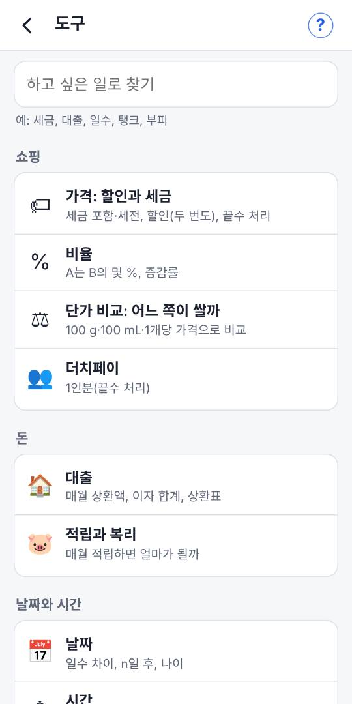
최근에 쓴 도구가 맨 앞에 나옵니다. 맨 아래의 QCalc 빠르게 열기에서 위젯이나 타일을 추가합니다.
가격: 할인과 세금
할 수 있는 것 세금 포함·별도 가격, 한두 번의 할인, 반올림 방법.
- 도구에서 가격: 할인과 세금를 엽니다.
- 가격, 할인(%), 세금을 넣습니다.
- 가격이 세금 포함인지, 어떻게 반올림할지 고릅니다.
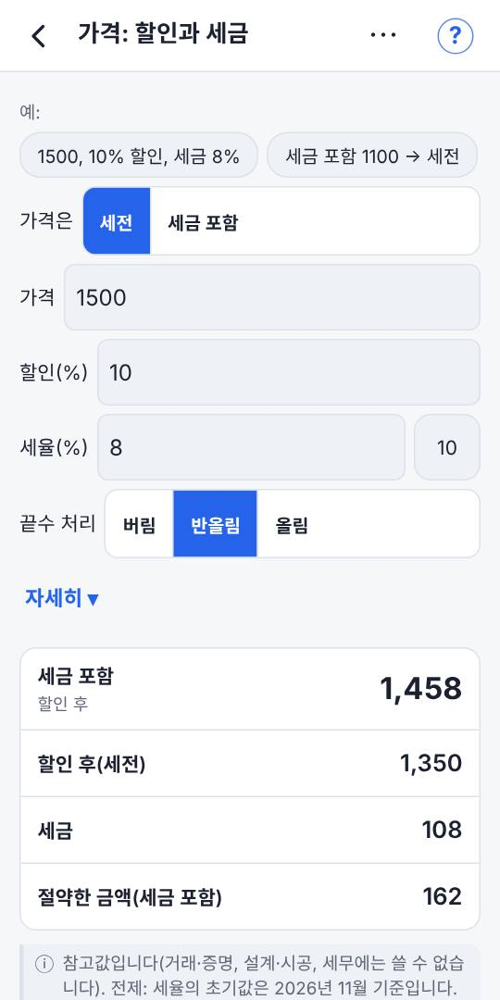
1500에 10% 할인, 세금 8% → 세금 포함 1,458(세금 별도 1,350, 세금 108)
- 세금 포함 가격에서 세금 별도 가격을 구할 때는 먼저 「세금 포함」을 고르세요.
퍼센트
할 수 있는 것 A가 B의 몇 %인지, A에서 B로의 변화가 몇 %인지.
- 비율를 열고 무엇을 구할지 고릅니다.
- A와 B를 넣습니다.
120 중 30 → 25%. 80에서 100 → 25% 증가
단가: 어느 쪽이 더 쌀까
할 수 있는 것 두 상품의 100 g(100 mL, 1개)당 가격을 비교합니다.
- 단가 비교: 어느 쪽이 쌀까를 엽니다.
- A와 B의 가격과 양(500 g, 1 kg)을 넣습니다.
500 g에 298과 1 kg에 498 → B가 더 쌈(100 g당 59.6과 49.8, 16.4% 저렴)
나눠 내기
할 수 있는 것 한 사람이 내는 금액을 고른 방법(100 단위 등)으로 맞춰서 구합니다.
- 더치페이을 열고 합계와 인원을 넣습니다.
- 올림인지 내림인지 고릅니다.
10000을 3명 → 한 사람 3,400(올림; 200 더 걷힘)
대출
할 수 있는 것 매달 상환액, 이자 합계, 상환표. 원리금 균등 또는 원금 균등.
- 대출을 엽니다.
- 금액, 연이율, 기간(년)을 넣습니다.
- 상환 방식을 고릅니다.
- 상환표(월별)를 열면 상환표가 나옵니다.
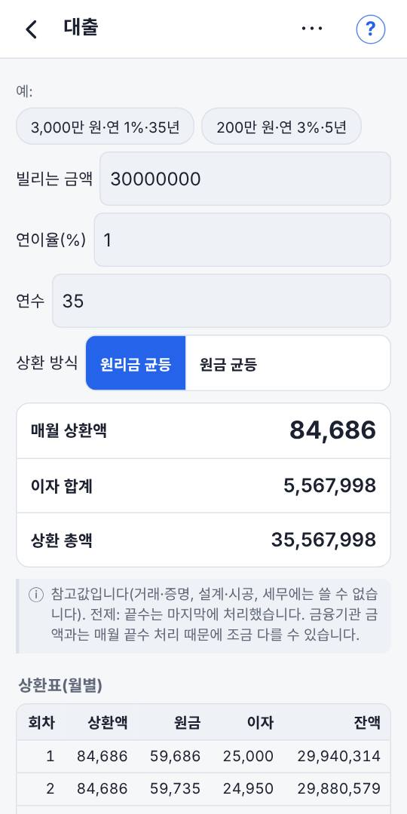
30,000,000, 연 1%, 35년(원리금 균등) → 매달 84,686, 이자 합계 5,567,998
Pro QCalc Pro 기능입니다. 상환표를 CSV 파일로 저장하는 것은 QCalc Pro의 기능입니다(보기와 복사는 무료).
- 1%를 0.01로 넣으면 0.01%가 됩니다. 퍼센트의 숫자를 넣으세요.
적금과 복리
할 수 있는 것 매달 적립하거나 한 번에 맡긴 돈이 복리로 얼마가 되는지.
- 적립과 복리를 열고 매달 금액(또는 처음 금액), 연이율, 기간(년)을 넣습니다.
매달 30,000, 3%, 20년 → 9,849,060(원금 7,200,000, 이자 2,649,060)
날짜
할 수 있는 것 두 날짜 사이의 일수, n일 뒤와 앞, 나이, 요일.
- 날짜를 열고 무엇을 구할지 고릅니다.
- 날짜와 일수를 넣습니다.
오늘부터 100일 뒤 → 그 날짜와 요일
시간
할 수 있는 것 h:mm의 덧셈과 뺄셈, 휴식을 뺀 근무 시간과 급여.
- 시간를 열고 시작, 끝, 휴식 시간을 넣습니다.
- 시급을 넣으면 급여가 나옵니다.
9:00부터 17:30, 휴식 1:00 → 근무 7:30(7.5시간)
단위와 통화 변환
할 수 있는 것 두 줄 중 어느 쪽에 숫자를 넣어도 다른 쪽이 변환됩니다. 길이, 무게, 부피, 온도, 연비, 통화 등.
- 단위·통화 변환를 열고 위의 버튼으로 양의 종류를 고릅니다.
- 두 줄의 단위를 고릅니다.
- 어느 쪽이든 숫자를 넣습니다.
- ⇅로 위아래를 바꿉니다.
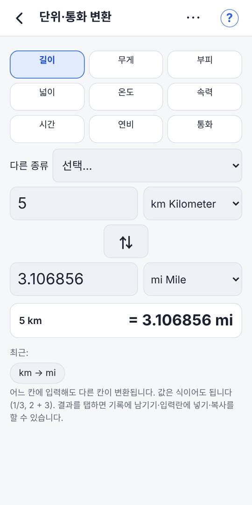
5 km → 3.106855961 mi
결과 줄을 탭하면 「5 km to mi」를 입력란에 넣거나 기록에 남길 수 있습니다.
도형: 넓이, 부피, 길이
할 수 있는 것 그림으로 도형을 고르고 치수를 넣으면 넓이, 둘레, 부피, 겉넓이가 나옵니다.
- 도구에서 평면도형 또는 입체도형를 엽니다.
- 도형의 그림을 탭합니다.
- 그림에 표시된 치수(r, h)를 넣습니다. 둥근 치수는 반지름과 지름 중에서 고를 수 있습니다.
- 입력하는 동안 결과가 바뀌고, 탭하면 그 식을 쓰거나 복사합니다.
반지름 2인 구 → 부피 32π/3 ≈ 33.51032164, 겉넓이 16π
재질을 고르면 무게도 나옵니다.
탱크: 액체의 양과 높이
할 수 있는 것 가로형·세로형 탱크나 둥근 용기의 액체 높이에서 양을, 양에서 높이를 구합니다.
- 도구에서 용기의 액량를 엽니다.
- 모양을 고르고 지름(또는 반지름)과 길이를 넣습니다.
- 액체의 높이를 넣고 길이 단위를 고릅니다.
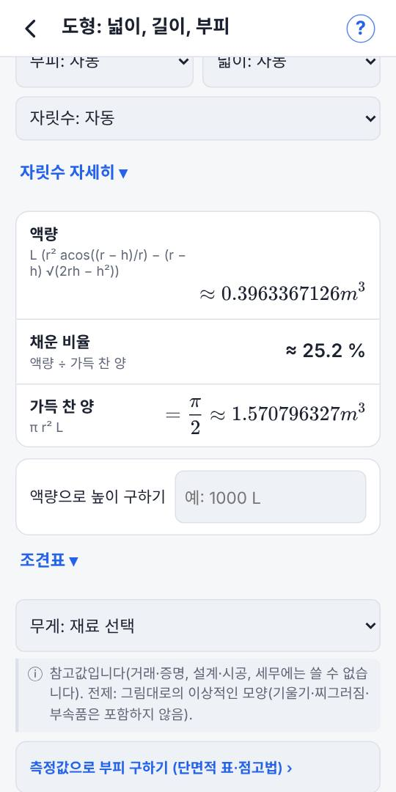
가로형, 지름 1 m, 길이 2 m, 액체 높이 30 cm → 0.3963367126 m³(약 396 L)
조견표 ▾로 높이마다의 양을 볼 수 있습니다.
- 지름 칸에 반지름을 넣으면 약 4분의 1이 됩니다. 반지름인지 지름인지 확인하세요.
탱크의 경판과 용량표
Pro QCalc Pro 기능입니다.
할 수 있는 것 탱크 양 끝의 경판(반구형, 반타원 2:1, 접시형)을 액체의 양과 전체 부피에 더하고, 높이마다의 양을 표로 만듭니다.
- 용기의 액량에서 가로형 또는 세로형 원통을 고릅니다.
- 경판에서 반구 또는 반타원 2:1를 고릅니다. 접시형은 다른 경판 ▾에 있습니다.
- L은 몸통의 길이(경판 제외)입니다.
- 조견표 ▾에서 간격을 넣으면 높이와 양의 표가 나오고, 복사하거나 CSV로 저장할 수 있습니다.
평판(지금까지처럼 원통만)은 무료입니다.
측정값으로 부피 구하기
할 수 있는 것 단면의 표(평균 단면법, 심프슨 공식)나 높이의 격자로 흙쌓기나 연못의 부피를 구합니다.
- 도구에서 측정값으로 부피 구하기를 엽니다.
- 단면 또는 점의 높이를 고르고, 거리와 넓이(또는 높이)를 넣습니다.
- 길이 단위를 고르면 부피가 m³와 L로 나옵니다.
단면 x²(0에서 4까지, 1 m 간격) → 평균 단면법 22 m³, 심프슨 공식 64/3 m³ ≈ 21.33 m³
스프레드시트에서 복사한 두 열을 표에 붙여 넣을 수 있습니다.
단면 데이터로 만드는 입체
Pro QCalc Pro 기능입니다.
할 수 있는 것 축을 따라 잰 위치와 지름의 표로 선반 가공품이나 용기의 부피, 용량, 무게, 겉넓이를 구합니다.
- 도구에서 윤곽에서 회전체를 엽니다.
- 위치와 지름(또는 반지름)을 넣습니다. 같은 위치의 두 줄은 단이 됩니다.
- 단위(mm, cm, m, in)를 고릅니다.
- 자세히 ▾에서 용기의 안쪽 단면과 도자기의 수축률을 더합니다.
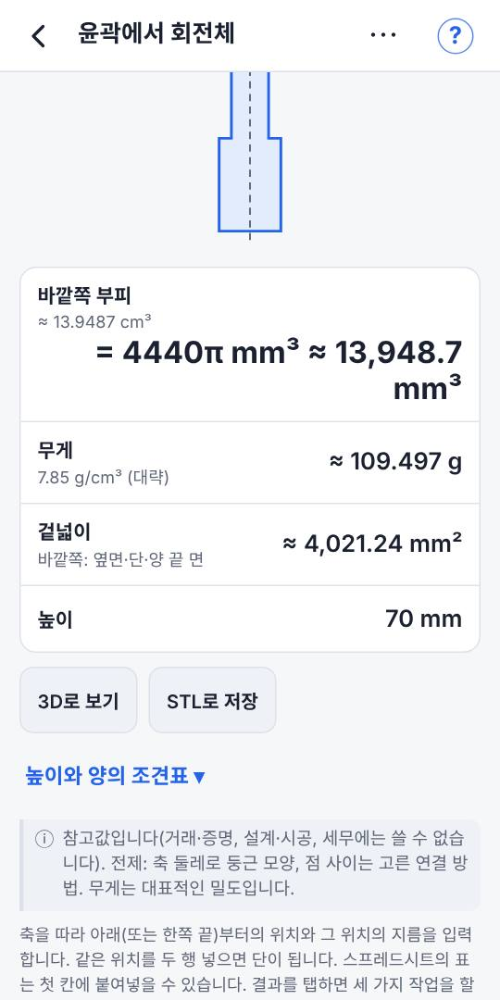
예의 단이 있는 축 → 바깥 부피 4440π mm³ ≈ 13.95 cm³, 철이면 약 109.5 g
3D로 보기로 모양을 보고, STL 파일로 3D 프린터에서 출력할 수 있습니다(STL 파일).
3D 프린터용 STL 파일
Pro QCalc Pro 기능입니다.
할 수 있는 것 회전체, 단면이 정해진 입체, 단면 데이터로 만든 입체를 3D 프린터용 STL 파일로 저장합니다.
- 입체의 결과 아래에 있는 STL로 저장를 누릅니다.
- 「1 단위 = □ mm」와 삼각형의 세밀함을 고릅니다.
- STL 파일 저장를 누르고 저장할 곳을 고릅니다.
출력하기 전에 슬라이서 소프트웨어에서 크기와 벽 두께를 확인하세요.
통계
할 수 있는 것 한 열이면 평균, 중앙값, 표준편차, 사분위수 등, 두 열이면 회귀 직선과 상관계수를 구합니다.
- 도구에서 통계를 엽니다.
- 값을 넣거나 스프레드시트에서 붙여 넣습니다.
- 두 열이면 📈 그래프로 보기로 점과 직선을 그립니다.
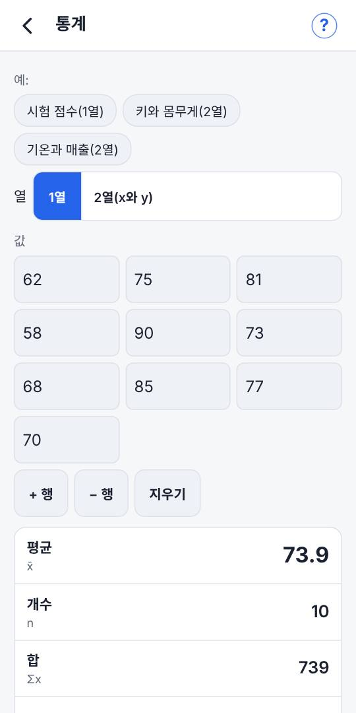
10명의 점수 → 평균 73.9, 중앙값 74, 표준편차(표본) 9.938142013
사분위수는 먼저 일본 고등학교 교과서의 방법으로 나옵니다. 스프레드시트의 방법은 「더 보기」에 있습니다.
- 숫자가 아닌 값이 있으면 그 줄과 고치는 법이 나옵니다.
계산 메모
할 수 있는 것 한 줄에 계산 하나를 쓰면 오른쪽에 결과가 나오는 메모입니다. 값에 이름을 붙이면 아래 줄에서 쓸 수 있습니다.
- 도구에서 계산 메모를 엽니다.
- 한 줄에 계산 하나를 씁니다. 예:
rent = 85000 JPY. - 뒤의 줄에서 이름을 씁니다:
rent × 12. - 합계를 뜻하는 말이 있는 줄은 위의 결과를 더합니다.
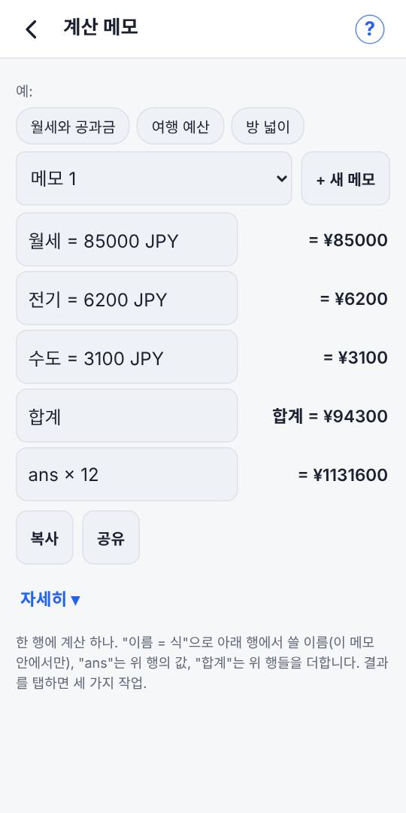
월세 85000, 전기 6200, 수도 3100(JPY) → 합계 줄에 ¥94300
Pro QCalc Pro 기능입니다. 첫 번째 메모는 무료입니다. 더 많은 메모와 텍스트·CSV로 저장하는 것은 QCalc Pro의 기능입니다.
# 또는 //로 시작하는 줄은 주석입니다(계산하지 않음).
그래프
2D 그래프
할 수 있는 것 y = f(x)의 그래프를 그립니다. 끌어서 옮기고, 두 손가락으로 확대합니다.
- ☰에서 그래프를 엽니다(입력란 위의 📈로도 됩니다).
- 함수를 한 줄에 하나씩, 그리고 x의 범위를 넣습니다.
- 그리기를 누릅니다.
- 그래프를 탭하면 그 점의 좌표가 나옵니다.
미분·접선·극값 ▾에서 도함수, 접선, 영점, 극값을 구합니다.
그래프 아래의 예를 탭하면 그려집니다.
넓이와 길이
할 수 있는 것 곡선과 x축 사이 또는 두 곡선 사이의 넓이, 곡선의 길이. 구간의 끝은 손가락으로 끌 수 있습니다.
- 2D 그래프에 함수를 그립니다.
- 넓이·길이 ▾를 엽니다.
- 구간 a, b를 넣거나 양 끝의 선을 끕니다.
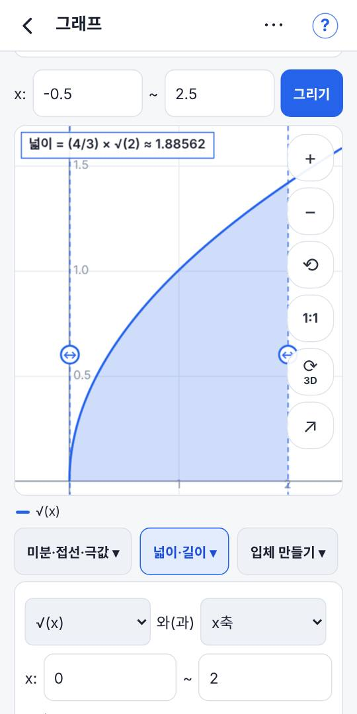
√x, 0에서 2까지 → 넓이 1.885618083
길이로 바꾸면 곡선의 길이가 나옵니다.
입체 만들기(회전체)
할 수 있는 것 2D 그래프의 영역을 축 둘레로 돌려 생기는 입체의 부피와 겉넓이.
- 2D 그래프에 함수를 그립니다(예:
x와x^2). - 그래프의 둥근 버튼 ⟳ 3D를 누릅니다. x축 둘레로 돌린 입체가 바로 3D로 나오고, 그 위에 부피가 크게 나옵니다(QCalc Pro). 무료에서는 2D 그래프에 입체의 단면(축 반대쪽에 비친 모양)과 부피가 나옵니다.
- 다른 축은 ← 2D로 돌아가기로 돌아와 그 선을 탭합니다. y = k의 선은 손가락으로 끌 수 있습니다. 3D로 보기로 다시 3D로 볼 수 있습니다.
- ↶ 실행 취소로 바로 앞의 축으로 돌아갑니다.
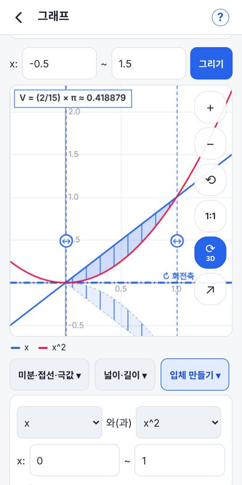
y = x와 y = x² 사이, x축 둘레 → 부피 2π/15 ≈ 0.4188790205
방법을 선으로 보이기는 원판(와셔)이나 원통 껍질을 그립니다. 파푸스-굴딘 정리: 의 줄은 무게중심으로 구한 부피와 적분을 비교합니다.
Pro QCalc Pro 기능입니다. 3D에서 손가락으로 입체를 돌리는 것은 3D 그래프와 같이 QCalc Pro의 기능입니다. 무료에서는 대신 3D로 돌려 보기 (QCalc Pro) 줄이 나옵니다.
단면이 정해진 입체
할 수 있는 것 두 곡선 사이의 영역을 밑면으로 하고, 그 위에 정사각형, 정삼각형, 반원을 세운 입체의 부피.
- 입체 만들기 ▾를 엽니다.
- 단면 입체(밑면에 모양을 세움)를 고릅니다.
- 모양(□ △ ◠)을 고릅니다. 다른 모양은 자세히: 다른 모양 ▾에 있습니다.
y = x와 y = x² 사이의 영역에 정사각형 → 부피 1/30
3D 그래프
Pro QCalc Pro 기능입니다.
할 수 있는 것 z = f(x, y)의 곡면과 입체를 3D로 그리고 손가락으로 돌립니다.
- 그래프에서 3D z = f(x, y)를 고릅니다.
- 함수를 4개까지, x와 y의 범위를 넣고 그리기를 누릅니다.
- 한 손가락으로 돌리고 두 손가락으로 확대합니다.
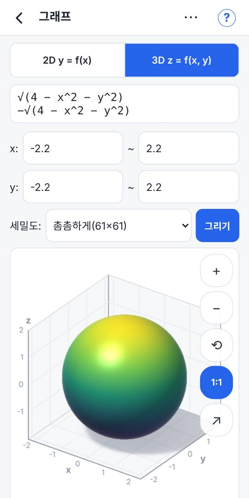
편미분 ▾로 ∂f/∂x와 ∂f/∂y를 그립니다.
부피와 겉넓이(3D)
할 수 있는 것 3D 그래프의 곡면 아래(또는 두 곡면 사이)의 부피와 곡면의 넓이.
- 3D 그래프에 곡면을 그립니다.
- 부피·겉넓이 ▾를 열면 부피와 겉넓이가 바로 나옵니다.
- 영역을 고릅니다: 직사각형, 원판, 둘러싸인 부분, 식으로 정한 영역.
예의 구(반지름 2) → 부피 32π/3, 겉넓이 16π
서식 화면: 미적분, 방정식, 행렬
미분, 적분, 극한, 합
할 수 있는 것 미적분 페이지의 키를 누르면 빈칸 □가 있는 서식이 열립니다.
- 미적분 페이지의 d/dx, ∫, lim, Σ 등의 키를 누릅니다.
- 빈칸을 채웁니다. 변수는 x 그대로 됩니다.
- 결과가 아래에 나오고, =로 기록에 남깁니다.
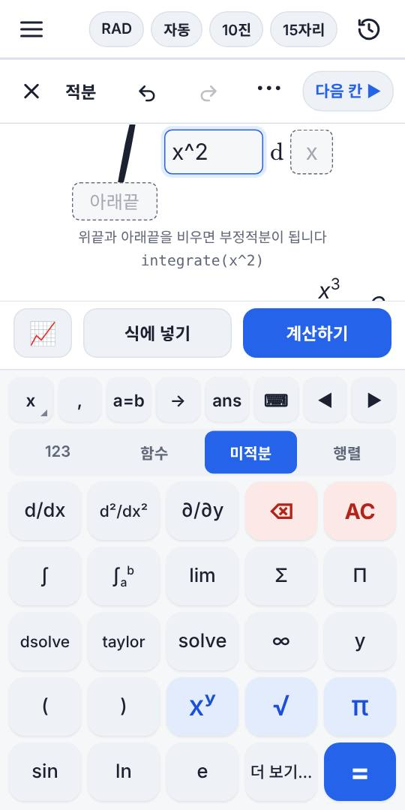
∫ x² sin(x) dx, 0에서 π까지 → π² − 4 ≈ 5.869604401
극한은 양쪽, 오른쪽에서(+), 왼쪽에서(−)를 고를 수 있습니다.
방정식
할 수 있는 것 방정식과 연립방정식을 풉니다.
- 미적분 페이지의 방정식 키를 누르거나
solve(x^2 − 5x + 6 = 0)이라고 씁니다. - 결과는 「x = 2 또는 x = 3」처럼 나옵니다.
solve(x^2 − 5x + 6 = 0) → x = 2, x = 3
행렬과 벡터
할 수 있는 것 행렬 페이지의 ▦로 행렬을 표처럼 입력합니다(30 × 30까지).
- 행렬 페이지에서 ▦를 누릅니다.
- 행과 열의 수를 고르고 칸을 채웁니다.
- det, 전치, 역행렬 등의 키로 계산합니다.
스프레드시트의 표를 붙여 넣을 수 있고, ⋯의 표로 복사(스프레드시트용)로 다시 복사합니다.
설정, 언어, 위젯
설정
할 수 있는 것 자주 쓰는 설정이 위에, 거의 바꾸지 않는 설정은 자세한 설정에 있습니다. 바꾸면 바로 적용됩니다.
| 설정 | 바뀌는 것 |
|---|---|
| 각도 단위 | 라디안, 도, 그레이드 |
| 정확한 계산과 근사 | 자동, 항상 정확, 항상 근사 |
| 숫자 표기 | 소수점과 자릿수 묶음(숫자 표기) |
| 분수 표시 | 자동, 소수, 분수, 대분수 |
| 정밀도(유효 자릿수) | 계산의 정밀도(처음에는 10) |
| 밝게/어둡게 | 화면의 색 |
| 글자 크기 | 기록, 입력란, 결과의 글자 |
| 색상 테마 | 키의 색(파랑 이외는 QCalc Pro) |
| 입력 중에 결과 표시 | 미리 보기 |
| 지금 환율 업데이트 | 환율을 지금 받습니다 |
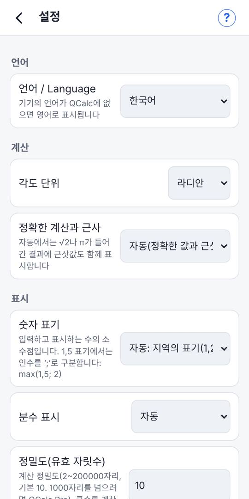
설정을 초기값으로 되돌리기로 모두 처음 값으로 돌아갑니다(언어는 그대로).
언어
할 수 있는 것 앱은 English, 日本語, Español, Deutsch, Français, 한국어, 繁體中文으로 쓸 수 있습니다.
- ☰에서 언어를 고릅니다.
- 언어를 고르면 앱이 그 언어로 다시 열립니다. 기록과 입력 중인 식은 그대로입니다.
- 기기 설정에 맞추기로 휴대폰의 언어를 따르게 돌아갑니다.
Android 13 이후에는 휴대폰의 설정에서 앱마다 언어를 고를 수도 있습니다.
위젯·타일·바로가기
할 수 있는 것 홈 화면의 위젯, 빠른 설정의 타일, 아이콘의 바로가기로 QCalc를 빨리 엽니다. 모두 무료입니다.
- 도구 맨 아래의 QCalc 빠르게 열기를 엽니다.
- 위젯이나 타일을 고르고 화면을 따라갑니다.
- 아이콘을 길게 누르면 새 계산, 도구, 변환 바로가기가 나옵니다.
위젯에는 마지막 결과와 계산, 도구, 변환 버튼이 있습니다.
이 앱에 대해와 개인정보
할 수 있는 것 앱 정보에서 버전, 개인정보, 라이선스, 소스 코드 링크를 봅니다.
- QCalc 알려 주기를 누르면 Google Play의 QCalc 주소를 공유할 수 있습니다.
- 버그·요청 보내기를 누르면 메일 앱에 초안이 열립니다. 버전, 기기, 언어만 들어가며 보낼지는 직접 정합니다.
- QCalc는 개인 정보를 모으지 않고 아무것도 보내지 않습니다.
- 인터넷은 환율을 받을 때만 씁니다.
- 계산 엔진은 GNU GPL v2 이상의 라이선스입니다(오픈 소스 라이선스).
QCalc Pro
무료로 쓸 수 있는 것
할 수 있는 것 계산, 2D 그래프, 넓이와 길이, 회전체, 도형, 탱크(평판), 일상 도구, 변환, 통계, 첫 번째 계산 메모, 위젯, 이 설명서는 무료이고 광고도 없습니다.
QCalc Pro로 늘어나는 것
할 수 있는 것 한 번 구매하면 모든 Pro 기능이 열리고, 앞으로의 업데이트로 늘어나는 기능도 포함됩니다. 구독도 광고도 없습니다.
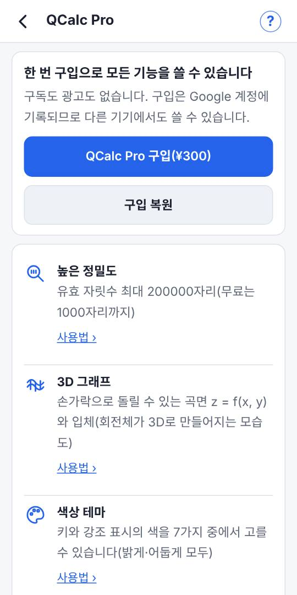
| 기능 | 이 설명서의 절 |
|---|---|
| 1000자리를 넘는 유효 숫자(200000자리까지) | 결과 읽기 |
| 3D 그래프, 3D로 보기 | 3D 그래프 |
| 색 테마(7색) | 설정 |
| 기록 내보내기(CSV) | 기록 내보내기 |
| 표의 CSV(대출, 적금) | 대출 |
| 탱크의 경판과 용량표 | 탱크의 경판 |
| 단면 데이터로 만드는 입체 | 단면 데이터로 만드는 입체 |
| STL 파일 | STL 파일 |
| GIF와 표시 없는 그림 | 공유 |
| 더 많은 계산 메모와 파일 저장 | 계산 메모 |
Pro 기능 줄의 사용법 ›는 이 설명서의 그 절을 엽니다.
구매와 복원
가격은 Google Play의 구매 화면에 표시됩니다.
- ☰에서 QCalc Pro를 엽니다(잠긴 기능을 보여 주는 패널에서도 됩니다).
- QCalc Pro 구입를 누르고 Google Play 화면에서 구매합니다.
- 이미 구매한 휴대폰이나 다시 설치한 뒤에는 구입 복원를 누릅니다.
구매는 Google 계정에 묶이므로 다른 기기에서도 쓸 수 있습니다.
문제가 생겼을 때
자주 묻는 질문
- 결과가 소수로 나오지 않음: 위쪽 버튼이나 정확한 계산과 근사를 확인하세요.
- x로 이상한 결과가 나옴: x는 변수입니다. 곱셈은 × 키로 하세요.
- 환율이 오래됨: 지금 환율 업데이트를 누르세요(인터넷 연결 시).
- 키의 맨 윗줄이 없음: 글자가 크면 숨겨집니다. 탭 끝의 ⌨로 보입니다.
- 3D 그래프가 열리지 않음: 3D 그래프는 QCalc Pro의 기능입니다(QCalc Pro).
오류 메시지와 고치는 법
할 수 있는 것 오류 메시지는 무엇이 잘못되었고 어떻게 고치는지 알려 줍니다. 자주 나오는 것:
| 메시지 | 고치는 법 |
|---|---|
| 괄호의 짝이 맞지 않음 | ( 와 ) 의 수를 맞춥니다 |
| 1.5를 읽을 수 없음(소수점이 「,」일 때) | 1,5라고 쓰고, 인수는 「;」로 나눕니다 |
| 단위가 맞지 않음 | 같은 종류의 양끼리 더합니다(m와 kg는 더할 수 없음) |
| 먼저 함수를 그리세요 | 넓이나 입체를 열기 전에 그래프의 그리기를 누릅니다 |
| 제한 시간이 되었음 | 제한 시간을 늘리거나 식을 간단히 합니다 |
계산의 제한 시간
할 수 있는 것 아주 오래 걸리는 계산은 계산 제한 시간(초)(처음에는 20초, 1–3600초)에서 멈춥니다.
- 계산하는 동안 알림이 나오고, 탭하면 멈춥니다.
- 더 오래 기다리려면 설정의 자세한 설정에서 계산 제한 시간(초)를 바꿉니다.
결과를 쓸 때의 주의
QCalc의 결과는 참고값입니다. 거래나 증명(법정 계량 포함), 설계와 시공, 세금 신고, 의료, 안전에 관한 판단에는 쓰지 마세요.
- 탱크의 양은 이상적인 모양을 가정합니다. 실제 탱크와는 다를 수 있습니다.
- 무게는 대표적인 밀도를 씁니다.
- 세율은 2026년 11월 시점의 일반적인 값이며, 칸에서 바꿀 수 있습니다.
- 환율은 받아 온 값이며 실제 거래의 환율이 아닙니다.
- 돈이나 안전에 관한 도구는 결과 아래에 주의 문구 한 줄을 보여 줍니다.
용어집
| 용어 | 뜻 |
|---|---|
| 정확한 값 | 분수, √, π를 쓴 값. 「=」로 시작 |
| 근삿값 | 소수로 나타낸 값. 「≈」로 시작 |
| 유효 숫자 | 결과의 자릿수(정밀도) |
| ans | 바로 앞의 결과 |
| 미리 보기 | 입력하는 동안 입력란 아래에 나오는 결과 |
| 회전체 | 영역을 축 둘레로 돌려 생기는 입체 |
| 경판 | 탱크 양 끝의 뚜껑 |
| 용량표 | 액체의 높이마다의 양을 적은 표 |
| STL | 3D 프린터용 입체의 파일 형식 |
| CSV | 스프레드시트에서 열 수 있는 텍스트 파일의 표 |
| QCalc Pro | 구매로 열리는 업무용 기능 |
색인
- ☆ 맨 위에 고정 — 기록과 메모리, 고정, 메모, 검색
- ↶ 실행 취소 — 입체 만들기(회전체)
- 1.12.0의 새 기능 — 1.12.0의 새 기능
- 2D 그래프 — 2D 그래프
- 3D 그래프 — 3D 그래프
- 3D 프린터용 STL 파일 — 3D 프린터용 STL 파일
- 3D로 돌려 보기 (QCalc Pro) — 입체 만들기(회전체)
- 3D로 보기 — 단면 데이터로 만드는 입체, 입체 만들기(회전체)
- QCalc Pro 구입 — 구매와 복원
- QCalc Pro로 늘어나는 것 — QCalc Pro로 늘어나는 것
- QCalc 빠르게 열기 — 도구 찾기, 위젯·타일·바로가기
- QCalc 알려 주기 — 이 앱에 대해와 개인정보
- QCalc로 할 수 있는 일 — QCalc로 할 수 있는 일
- STL 파일 저장 — 3D 프린터용 STL 파일
- STL로 저장 — 3D 프린터용 STL 파일
- ← 2D로 돌아가기 — 입체 만들기(회전체)
- 가격: 할인과 세금 — 1.12.0의 새 기능, 가격: 할인과 세금
- 각도 단위 — 설정
- 결과 복사 — 기록과 메모리
- 결과 읽기: 정확한 값, 근삿값, 분수 — 결과 읽기: 정확한 값, 근삿값, 분수
- 결과를 쓸 때의 주의 — 결과를 쓸 때의 주의
- 경판 — 탱크의 경판과 용량표
- 계산 메모 — 1.12.0의 새 기능, 계산 메모
- 계산 제한 시간(초) — 계산의 제한 시간
- 계산의 제한 시간 — 계산의 제한 시간
- 고정, 메모, 검색 — 고정, 메모, 검색
- 구매와 복원 — 구매와 복원
- 구입 복원 — 구매와 복원
- 그래프 — 2D 그래프, 3D 그래프
- 그래프 이미지 공유 — 그림과 GIF 공유
- 그리기 — 2D 그래프, 3D 그래프, 오류 메시지와 고치는 법
- 그림과 GIF 공유 — 그림과 GIF 공유
- 글자 크기 — 설정
- 기기 설정에 맞추기 — 언어
- 기록 검색 — 기록과 메모리, 고정, 메모, 검색
- 기록 내보내기(CSV 파일) — 기록과 메모리, 기록 내보내기(CSV)
- 기록 내보내기(CSV) — 기록 내보내기(CSV)
- 기록 모두 지우기 — 기록과 메모리
- 길이 — 넓이와 길이
- 나눠 내기 — 나눠 내기
- 날짜 — 1.12.0의 새 기능, 날짜
- 넓이·길이 ▾ — 넓이와 길이
- 넓이와 길이 — 넓이와 길이
- 네 개의 키 페이지 — 네 개의 키 페이지
- 다른 경판 ▾ — 탱크의 경판과 용량표
- 다음 칸 ▶ — 빈칸 □(서식)
- 단가 비교: 어느 쪽이 쌀까 — 1.12.0의 새 기능, 단가: 어느 쪽이 더 쌀까
- 단가: 어느 쪽이 더 쌀까 — 단가: 어느 쪽이 더 쌀까
- 단면 데이터로 만드는 입체 — 단면 데이터로 만드는 입체
- 단면 입체(밑면에 모양을 세움) — 단면이 정해진 입체
- 단면이 정해진 입체 — 단면이 정해진 입체
- 단위·통화 변환 — 1.12.0의 새 기능, 단위와 통화 변환
- 단위와 통화 변환 — 단위와 통화 변환
- 대출 — 1.12.0의 새 기능, 대출
- 더치페이 — 1.12.0의 새 기능, 나눠 내기
- 도구 — 1.12.0의 새 기능, 도구 찾기, 가격: 할인과 세금, 도형: 넓이, 부피, 길이
- 도구 찾기 — 도구 찾기
- 도형: 넓이, 부피, 길이 — 도형: 넓이, 부피, 길이
- 메모리 키(M+ M− MR MC) — 메모리 키(M+ M− MR MC)
- 메모리 키(M+ M− MR MC) 표시 — 메모리 키(M+ M− MR MC)
- 모든 칸 지우기 — 빈칸 □(서식)
- 목록(함수·단위·상수) — 네 개의 키 페이지, 목록: 함수, 단위, 상수, 내 정의
- 목록: 함수, 단위, 상수, 내 정의 — 목록: 함수, 단위, 상수, 내 정의
- 무료로 쓸 수 있는 것 — 무료로 쓸 수 있는 것
- 미분, 적분, 극한, 합 — 미분, 적분, 극한, 합
- 미분·접선·극값 ▾ — 2D 그래프
- 미적분 — 화면 보는 법, 네 개의 키 페이지, 빈칸 □(서식), 미분, 적분, 극한, 합
- 반구 — 탱크의 경판과 용량표
- 반타원 2:1 — 탱크의 경판과 용량표
- 밝게/어둡게 — 설정
- 방법을 선으로 보이기 — 입체 만들기(회전체)
- 방정식 — 방정식
- 버그·요청 보내기 — 이 앱에 대해와 개인정보
- 변환 — 위젯·타일·바로가기
- 복사 — 여러 줄 더하기
- 부피·겉넓이 ▾ — 부피와 겉넓이(3D)
- 부피와 겉넓이(3D) — 부피와 겉넓이(3D)
- 분수 표시 — 설정
- 비율 — 1.12.0의 새 기능, 퍼센트
- 빈칸 □(서식) — 빈칸 □(서식)
- 사용 설명서 — 앱 안의 예와 팁
- 사용법 › — QCalc Pro로 늘어나는 것
- 상환표(월별) — 대출
- 새 계산 — 위젯·타일·바로가기
- 색상 테마 — 설정
- 설정 — 결과 읽기: 정확한 값, 근삿값, 분수, 숫자 표기: 소수점, 메모리 키(M+ M− MR MC), 통화와 환율
- 설정을 초기값으로 되돌리기 — 설정
- 숫자 표기 — 숫자 표기: 소수점, 설정
- 숫자 표기: 소수점 — 숫자 표기: 소수점
- 시간 — 1.12.0의 새 기능, 시간
- 식 입력하기 — 식 입력하기
- 식에 넣기 — 목록: 함수, 단위, 상수, 내 정의
- 식을 입력란에 넣기 — 기록과 메모리
- 실행 취소 — 지우기와 되돌리기
- 앱 안의 예와 팁 — 앱 안의 예와 팁
- 앱 정보 — 이 앱에 대해와 개인정보
- 양쪽 — 미분, 적분, 극한, 합
- 언어 — 언어
- 여러 줄 더하기 — 여러 줄 더하기
- 예시와 사용법 — 앱 안의 예와 팁
- 오류 메시지와 고치는 법 — 오류 메시지와 고치는 법
- 오른쪽에서(+) — 미분, 적분, 극한, 합
- 오픈 소스 라이선스 — 이 앱에 대해와 개인정보
- 왼쪽에서(−) — 미분, 적분, 극한, 합
- 용기의 액량 — 탱크: 액체의 양과 높이, 탱크의 경판과 용량표
- 위젯·타일·바로가기 — 위젯·타일·바로가기
- 윤곽에서 회전체 — 단면 데이터로 만드는 입체
- 이 앱에 대해와 개인정보 — 이 앱에 대해와 개인정보
- 이 양식의 사용법 › — 빈칸 □(서식)
- 입력 중에 결과 표시 — 설정
- 입체 만들기 ▾ — 단면이 정해진 입체
- 입체 만들기(회전체) — 입체 만들기(회전체)
- 입체도형 — 도형: 넓이, 부피, 길이
- 자동 — 숫자 표기: 소수점
- 자세한 설정 — 메모리 키(M+ M− MR MC), 설정, 계산의 제한 시간
- 자세히 ▾ — 단면 데이터로 만드는 입체
- 자세히: 다른 모양 ▾ — 단면이 정해진 입체
- 자주 묻는 질문 — 자주 묻는 질문
- 적금과 복리 — 적금과 복리
- 적립과 복리 — 1.12.0의 새 기능, 적금과 복리
- 정밀도(유효 자릿수) — 결과 읽기: 정확한 값, 근삿값, 분수, 설정
- 정확한 계산과 근사 — 설정, 자주 묻는 질문
- 조견표 ▾ — 탱크: 액체의 양과 높이, 탱크의 경판과 용량표
- 줄 선택: 합계·평균·복사 — 기록과 메모리, 여러 줄 더하기
- 지금 환율 업데이트 — 통화와 환율, 설정, 자주 묻는 질문
- 지우기와 되돌리기 — 지우기와 되돌리기
- 짧은 메모 달기 — 기록과 메모리, 고정, 메모, 검색
- 처음 해 보는 세 가지 계산 — 처음 해 보는 세 가지 계산
- 측정값으로 부피 구하기 — 측정값으로 부피 구하기
- 탱크: 액체의 양과 높이 — 탱크: 액체의 양과 높이
- 탱크의 경판과 용량표 — 탱크의 경판과 용량표
- 통계 — 1.12.0의 새 기능, 통계
- 통화와 환율 — 통화와 환율
- 파푸스-굴딘 정리: — 입체 만들기(회전체)
- 퍼센트 — 퍼센트
- 편미분 ▾ — 3D 그래프
- 평면도형 — 도형: 넓이, 부피, 길이
- 표로 복사(스프레드시트용) — 행렬과 벡터
- 함수 — 화면 보는 법, 네 개의 키 페이지
- 함수, 단위, 통화 쓰는 법 — 함수, 단위, 통화 쓰는 법
- 행렬 — 화면 보는 법, 네 개의 키 페이지, 행렬과 벡터
- 행렬과 벡터 — 행렬과 벡터
- 후보 — 후보
- 📈 그래프로 보기 — 통계